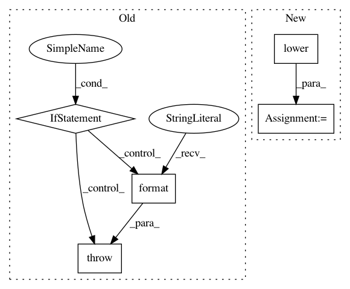

d19f211130de38bb931bbf101df7c6d0698d6e56,prody/dynamics/functions.py,,calcENM,#Any#Any#Any#Any#Any#Any#Any#,351
Before Change
model = "gnm"
elif model is ANM:
model = "anm"
elif isinstance(model, str):
model = model.lower().strip()
else:
raise TypeError("invalid type for model: {0}".format(type(model)))
if isinstance(trim, str):
trim = trim.lower().strip()
elif trim is reduceModel:
After Change
elif model is ANM:
model = "anm"
else:
model = str(model).lower().strip()
if trim is reduceModel:
trim = "reduce"
In pattern: SUPERPATTERN
Frequency: 3
Non-data size: 5
Instances
Project Name: prody/ProDy
Commit Name: d19f211130de38bb931bbf101df7c6d0698d6e56
Time: 2018-02-27
Author: shz66@pitt.edu
File Name: prody/dynamics/functions.py
Class Name:
Method Name: calcENM
Project Name: OpenNMT/OpenNMT-tf
Commit Name: d97a73f8ea19e52166702dd448dea03e3a6be95b
Time: 2019-03-27
Author: guillaume.klein@systrangroup.com
File Name: opennmt/models/sequence_classifier.py
Class Name: SequenceClassifier
Method Name: __init__
Project Name: prody/ProDy
Commit Name: 1c01f08cd378eabf223345e4ac7f0357bbf93649
Time: 2018-02-26
Author: shz66@pitt.edu
File Name: prody/dynamics/functions.py
Class Name:
Method Name: calcENM